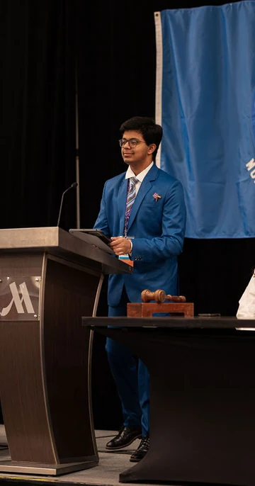
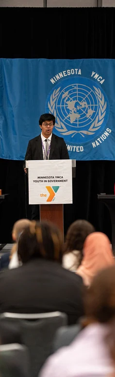
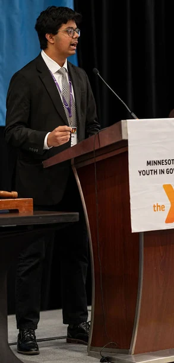
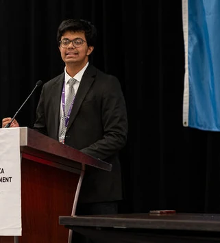
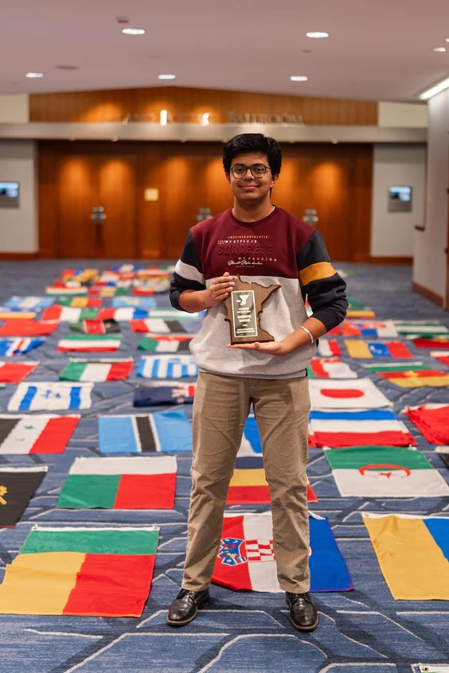

LEADERSHIP · POLICY
May 2024 – May 2025
President, Annan ECOSOC.
Committee president · Model United Nations
I chaired policy discussions for 28 delegates, helping a committee move through debate while making room for people to contribute.
What the work
looked like.
My first year in Model United Nations, I represented the United States in Annan ECOSOC, the Economic and Social Council. We discussed tourism and slavery; my role was to present the United States’ position on both. I received Special Recognition for Outstanding Leadership in 2024, and at the end of that year, the committee elected me president for the following year.
As president, I helped plan the event throughout my one-year term and arrived a day early to prepare. The conference lasted approximately four days. During committee sessions, I chaired discussions for 28 delegates and helped keep debate moving.
Top skills utilized
- Facilitation
- Committee leadership
- Policy discussion
- Public speaking
Scenes from
the process.





